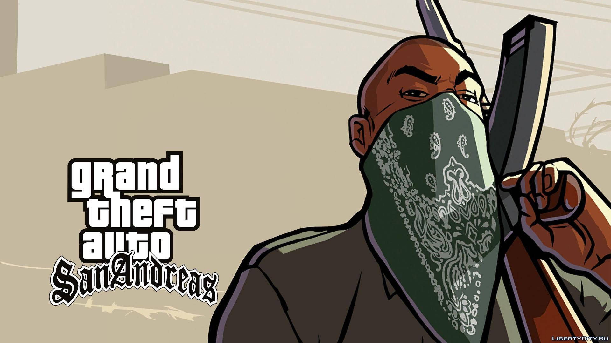

A história
O Retorno e a Decadência da Grove Street
Em 1992, Carl Johnson (CJ) retorna a Los Santos após cinco anos em Liberty City para o funeral de sua mãe, assassinada em um tiroteio. Ao chegar, ele é imediatamente chantageado pelo oficial corrupto Frank Tenpenny, líder da unidade C.R.A.S.H. CJ reencontra seu irmão Sweet e seus amigos de infância, descobrindo que sua antiga gangue, a Grove Street Families, está desmantelada, entregue às drogas e perdendo territórios para os rivais Ballas. O objetivo inicial de CJ é ajudar seu irmão a restaurar a honra e o poder da família nas ruas de Los Santos.
A Grande Traição e o Exílio
No momento em que a Grove Street parecia estar recuperando sua força, CJ descobre uma verdade devastadora: seus amigos íntimos, Big Smoke e Ryder, traíram a gangue para trabalhar com Tenpenny e os Ballas. Em uma emboscada da polícia, Sweet é ferido e preso, enquanto CJ é levado à força por Tenpenny para o interior de San Andreas. Exilado de sua cidade e sem recursos, Carl é forçado a realizar trabalhos sujos para o C.R.A.S.H. nas florestas e desertos de Whetstone e Bone County, onde conhece aliados improváveis, como o místico The Truth e o líder da tríade Wu Zi Mu.
A Expansão e o Sucesso nos Negócios
A jornada de CJ continua nas cidades de San Fierro e Las Venturas, onde ele deixa de ser apenas um "gangster de rua" para se tornar um estrategista e magnata. Em San Fierro, ele desmantela o sindicato de drogas dos traidores e mata Ryder. Em Las Venturas, ele ajuda a gerenciar um cassino e se envolve em missões de espionagem de alto risco para o agente do governo Mike Toreno. Em troca desses serviços perigosos, que incluíram roubar um jetpack de uma base militar, Toreno utiliza sua influência política para finalmente tirar Sweet da prisão.
O Acerto de Contas Final
CJ retorna a Los Santos como um homem rico e influente, mas Sweet insiste em retomar suas raízes na Grove Street. A cidade mergulha em um caos absoluto após o oficial Tenpenny ser absolvido de seus crimes em um julgamento injusto, provocando revoltas populares. No clímax da história, CJ invade a fortaleza de Big Smoke, derrotando seu antigo amigo em um confronto emocional e mortal. A saga termina com uma perseguição frenética por Los Santos que resulta na morte de Tenpenny, trazendo enfim a paz para a Grove Street e consolidando CJ como o líder definitivo de seu império.